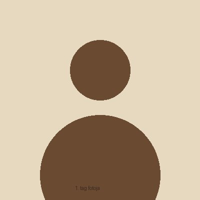

Rólunk

Farkas Botond
Minden (ideiglenes)
E-mail: farkasb@kkszki.hu
Feladat a projektben: Minden (ideiglenes)
Simon-Kovács Gergő
Minden (ideiglenes)
E-mail: simon-kovacsg@kkszki.hu
Feladat a projektben: Minden (ideiglenes)
Szlivka Ákos Zoltán
Minden (ideiglenes)
E-mail: szlivkaa@kkszki.hu
Feladat a projektben: Minden (ideiglenes)
A projekt célja
A Soundline egy zenekar menedzsment rendszer, amely a próbák, fellépések, kották és közös programok kezelését teszi egyszerűvé. A tagok egy helyen találják meg a szükséges információkat, a karnagy pedig könnyen szervezheti a zenekar mindennapjait.
Mire szolgál a Soundline?
A zenekarok szervezése ma gyakran csoportchaten és papíron zajlik, ezért az információ szétszóródik, a kották elkallódnak, és nehéz tudni, ki jön egy próbára vagy fellépésre. A Soundline ezt oldja meg: egy helyen kezeli a zenekar mindennapjait.
A Soundline egy menedzsment rendszer fúvós- és rézfúvós zenekaroknak:
- Események kezelése: próbák, fellépések és egyéb események egy helyen, a tagok visszajelezhetnek (jövök / nem jövök / talán), a karnagy pedig szólamonként látja, kikre számíthat.
- Kottaállomány: a kották egy helyen vannak, a tagok szólamuk szerint megtalálják és letölthetik a saját szólamaikat.
- Élménygaléria: a fellépések és közös programok fotói egy közös galériában, így a zenekar emlékei sem vesznek el a csoportchatben.
A rendszer reszponzív weboldalként asztali gépen és mobilon is használható, az admin felület pedig asztali alkalmazásként is elkészülhet.